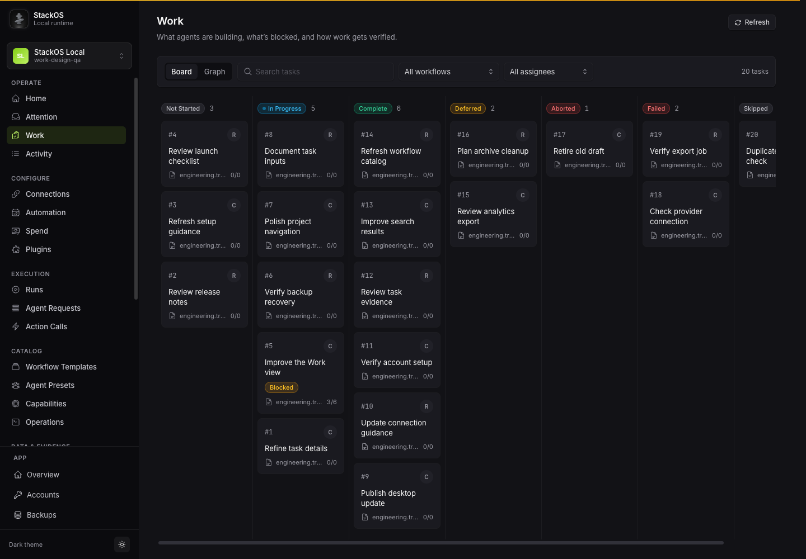
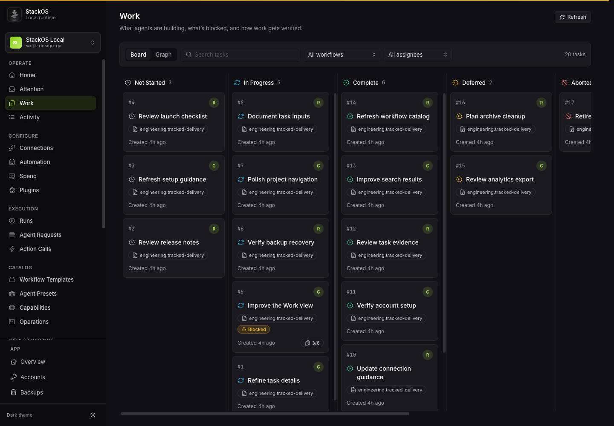
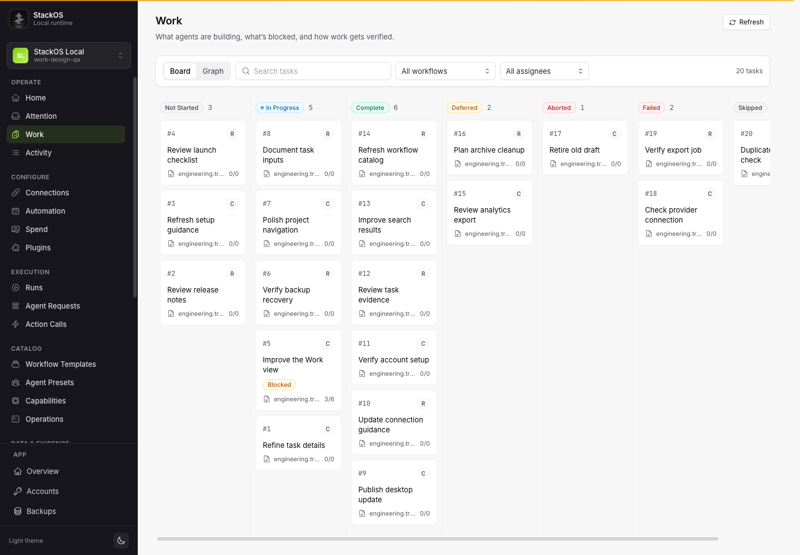
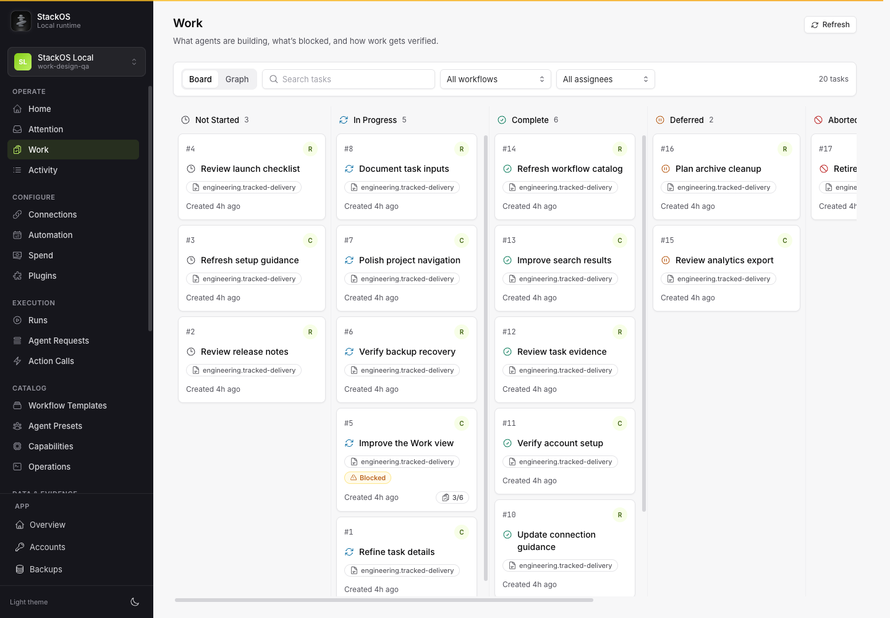
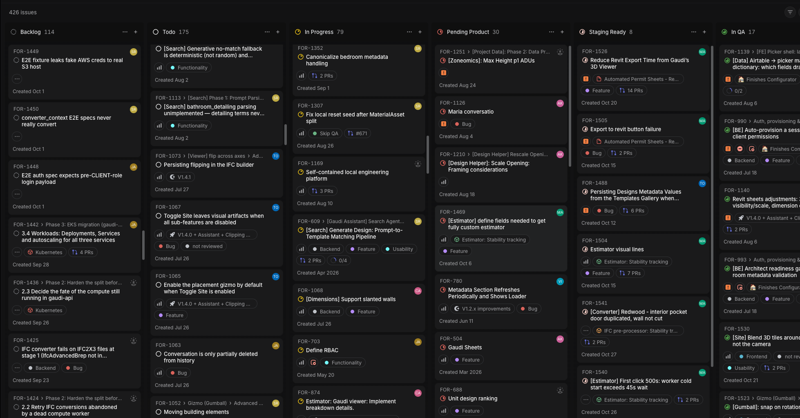

Evidence presentation only. Root-authored QA and signoff determine acceptance. Use a 1600 × 1000 browser viewport and the section anchors below for captures.
Previous popup QA is archived unchanged in prior-popup-qa.md.
Both original captures are 1440 × 1000. Each renders at 720 × 500 CSS pixels (50% scale). Screenshot bytes are unchanged.

before-dark.png

after-dark.png
The identical x=280, y=172, 768 × 790 region from each intact screenshot is shown at native CSS scale. Cropping uses browser overflow clipping only.
before-dark.png
after-dark.png
Both original captures are 1440 × 1000. Each renders at 720 × 500 CSS pixels (50% scale). Screenshot bytes are unchanged.

before-light.png

after-light.png
The identical x=280, y=172, 768 × 790 region from each intact screenshot is shown at native CSS scale. Cropping uses browser overflow clipping only.
before-light.png
after-light.png
Different products, content, status sets and viewports: the supplied Linear screenshot is 1958 × 1023, while StackOS is 1440 × 1000. Both are displayed at 720px width, so their image scales differ. This comparison communicates card hierarchy, status icons, owner marks and lightweight metadata; it is not a clone or a pixel-fidelity comparison.

linear-direction-reference.png
after-dark.png